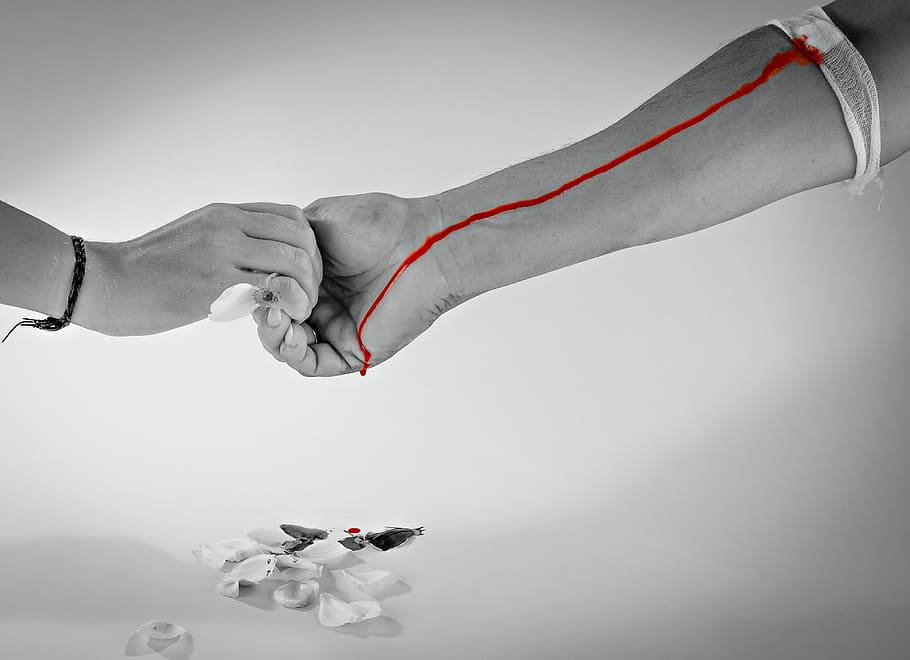
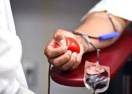

<!Doctype html>
<html>
    <head>
        <link rel="stylesheet" href="blood.css">
    </head>
</html>
<body>
    <div class="div">
        <p class="p1"> &nbsp;&nbsp;&nbsp;<b>Blood for life!!</b> &nbsp;&nbsp;&nbsp;&nbsp;&nbsp;&nbsp;&nbsp;&nbsp;&nbsp;&nbsp;&nbsp;&nbsp; Home &nbsp;&nbsp;&nbsp;&nbsp;&nbsp;&nbsp;Campaign&nbsp;&nbsp;&nbsp;&nbsp;&nbsp;&nbsp;Pages&nbsp;&nbsp;&nbsp;&nbsp;&nbsp;&nbsp;Report&nbsp;&nbsp;&nbsp;&nbsp;&nbsp;&nbsp;Content&nbsp;&nbsp;&nbsp;&nbsp;&nbsp;&nbsp;About us</p>
        
    </div>

    <section >
        
        
        <div class="div1">
        <h1 class="h1" >DONATE YOUR BLOOD AND INSPIRE
            OTHERS TO DONATE.✨</h1>
        <p class="p2"><b>DONATE BLOOD, SAVE LIFE!</b></p>
        <button class="button">Join Us </button> 
        </div>
    </section>
    <section class="sec2">
        <form>
        <fieldset style="width:96%">
            <legend><b>WE ARE HERE FOR HELPING PEOPLE</b></legend>
       <p class="p3">You can give blood at any of our blood donation venues. We have several donor
        centers
        and visit other vanues on various occassions</p>
        <button class="rebut">REQUEST APPOINTMENT</button>
        </fieldset>
        </form>
    </section>
    <br><br><br><br>

    <section class="process-container">
        <h1 class="pro1">Donation Process</h1>
        <p class="pro2">The donation process from the time you arrive at center until the time you leave</p>

        <div id="process">
            <div class="box">
                
                <h2 class="h-secondary">Registration</h2>
                <p class="center">You need to complete a very simple registration form which contatins all required contact information to enter in the donation process.</p>
            </div>
            <div class="box">
                
                <h2 class="h-secondary">Screening</h2>
                <p class="center">A drop of blood from your finger will be taken for a simple test to ensure that your blood levels are proper enough for donation.</p>
            </div>
            <div class="box">
                
                <h2 class="h-secondary">Donation</h2>
                <p class="center">After passing screening test successfully you will be directed to a donor bed for donation. It will take only 6-10 minutes.</p>
            </div>
            <div class="box">
                
                <h2 class="h-secondary">Refreshment</h2>
                <p class="center">You can also stay in the sitting room until you feel strong enough to leave the center. You will receive refreshments in the donation zone.</p>
            </div>
        </div>
    </section>   

    <section class="abt">
        <div class="about">
            <h1 >About us</h1>
            <p>  Blood donation and transfusion service is an indispensable part of contemporary medicine and health care. Blood management has been recognized as a challenging task because of life threatening nature of blood products entails the punctilious administration due to its perishable nature & required timely processing and it also saves the life. <br>
            <br>
            <b>Developed by:-</b><br> 
            &nbsp;&nbsp;&nbsp;&nbsp;Harinisree G<br><br>
             <b> Contact us:</b><br>
             &nbsp;&nbsp;&nbsp;&nbsp;phone - 9876543210<br>
             &nbsp;&nbsp;&nbsp;&nbsp;email - harinisree@gmail.com
                       
            </p>
        </div>
    </section>
    <footer>
        <div class="copy">
            copyright &copy; www.bloodforlife.com. All rights reserved!
        </div>
    </footer>
    
</body>